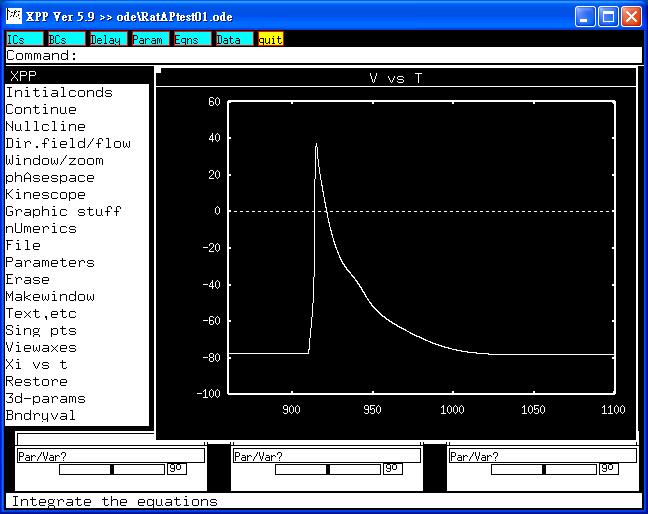

This is the readme for the models associated with the paper Wang YJ, Chen BS, Lin MW, Lin AA, Peng H, Sung RJ, Wu SN. Time-dependent block of ultrarapid-delayed rectifier K(+) currents by aconitine, a potent cardiotoxin in heart-derived H9c2 myoblasts and in neonatal rat ventricular myocytes. Toxicol Sci (2008) 106:454-463. Abstract: Aconitine (ACO), a highly toxic diterpenoid alkaloid, is recognized to have effects on cardiac voltage-gated Na(+) channels. However, it remains unknown whether it has any effects on K(+) currents. The effects of ACO on ion currents in differentiated clonal cardiac (H9c2) cells and in cultured neonatal rat ventricular myocytes were investigated in this study. In H9c2 cells, ACO suppressed ultrarapid-delayed rectifier K(+) current (I(Kur)) in a time- and concentration-dependent fashion. The IC(50) value for ACO-induced inhibition of I(Kur) was 1.4 microM. ACO could accelerate the inactivation of I(Kur) with no change in the activation time constant of this current. Steady-state inactivation curve of I(Kur) during exposure to ACO could be demonstrated. Recovery from block by ACO was fitted by a single-exponential function. The inhibition of I(Kur) by ACO could still be observed in H9c2 cells preincubated with ruthenium red (30 microM). Intracellular dialysis with ACO (30 microM) had no effects on I(Kur). I(Kur) elicited by simulated action potential (AP) waveforms was sensitive to block by ACO. Single-cell Ca(2+) imaging revealed that ACO (10 microM) alone did not affect intracellular Ca(2+) in H9c2 cells. In cultured neonatal rat ventricular myocytes, ACO also blocked I(Kur) and prolonged AP along with appearance of early afterdepolarizations. Multielectrode recordings on neonatal rat ventricular tissues also suggested that ACO-induced electrocardiographic changes could be associated with inhibition of I(Kur). This study provides the evidence that ACO can produce a depressant action on I(Kur) in cardiac myocytes. -------------------------- To run the model: XPP: start with the command xpp ode\RatAPtest01.ode or xpp RatAPtest01.ode Mouse click on Initialconds, and then (G)o. This makes a trace similar to the upper part of fig 6A, 6C and 7 in the paper of Wang et al.  This trace was used as a template of rat ventricular myocyte and replayed to H9c2 myoblasts in an attempt to evoke I(Kur). Bard Ermentrout's website http://www.pitt.edu/~phase/ describes how to get and use xpp (Bard wrote xpp). The model file was submitted by: Dr. Sheng-Nan Wu Department of Physiology Natl Cheng Kung U Med Coll Tainan 70101, Taiwan